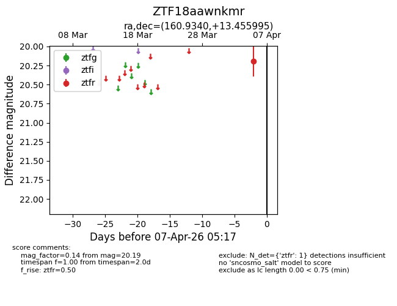
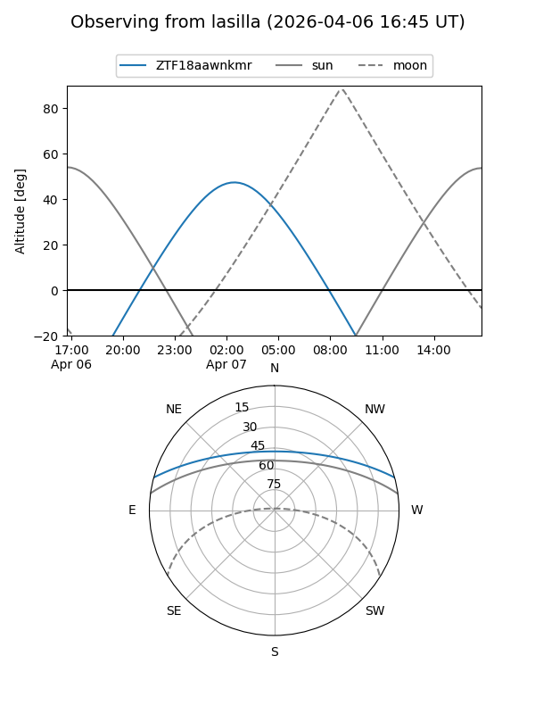
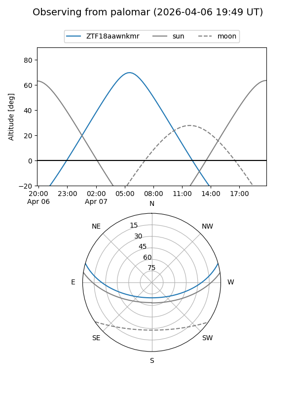

ZTF18aawnkmr
Target ZTF18aawnkmr at 2026-04-07 05:21
Aliases and brokers:
FINK: link
Lasair: link
ALeRCE: link
alt names
ZTF18aawnkmr (ztf,fink_ztf)
Coordinates:
equatorial (ra, dec) = 160.9340,+13.45600
equatorial (HMS+DMS) = 10:43:44.15,+13:27:21.58
galactic (l, b) = (231.1514,+57.21796)
Flags:
Photometry:
last ztfr=20.19
1 ztfr detections
Lightcurve

Visibility


Additional plots